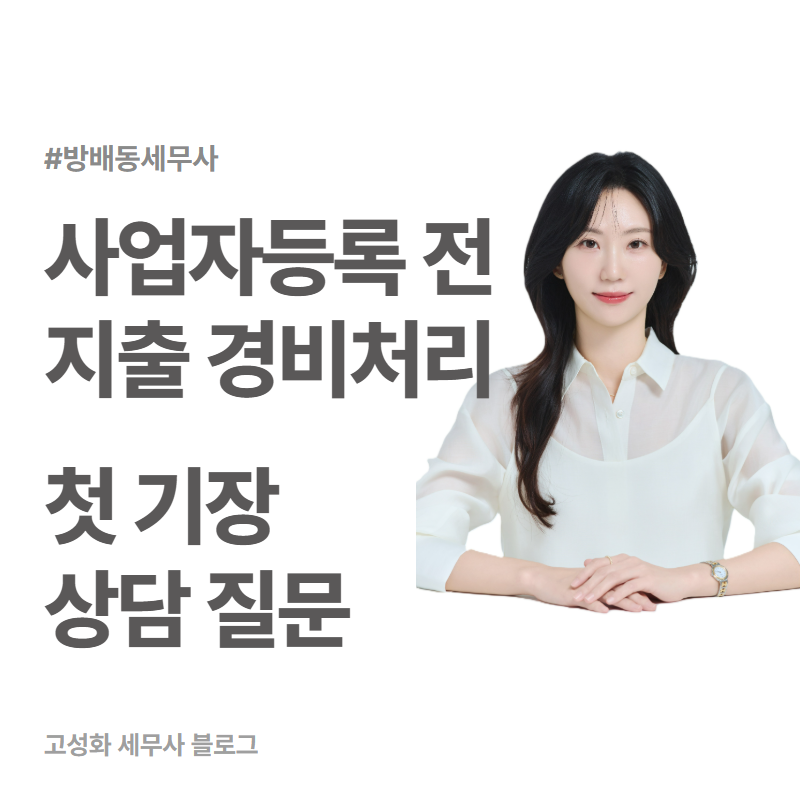
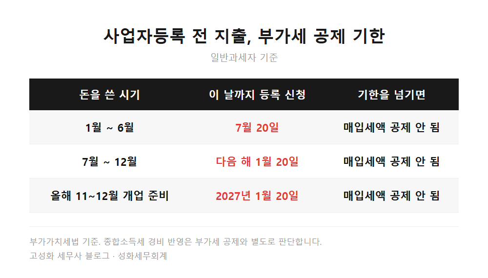
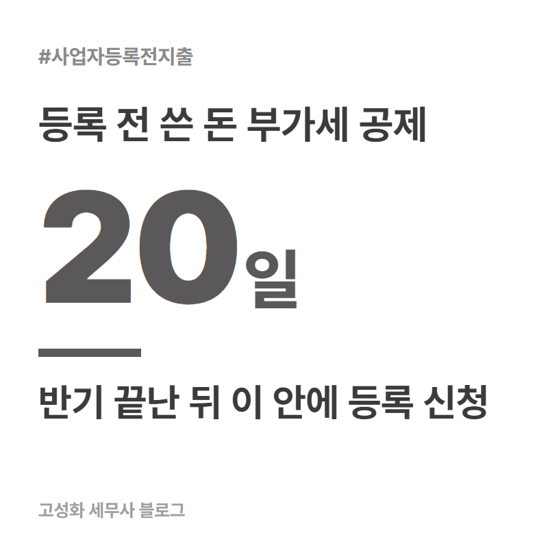
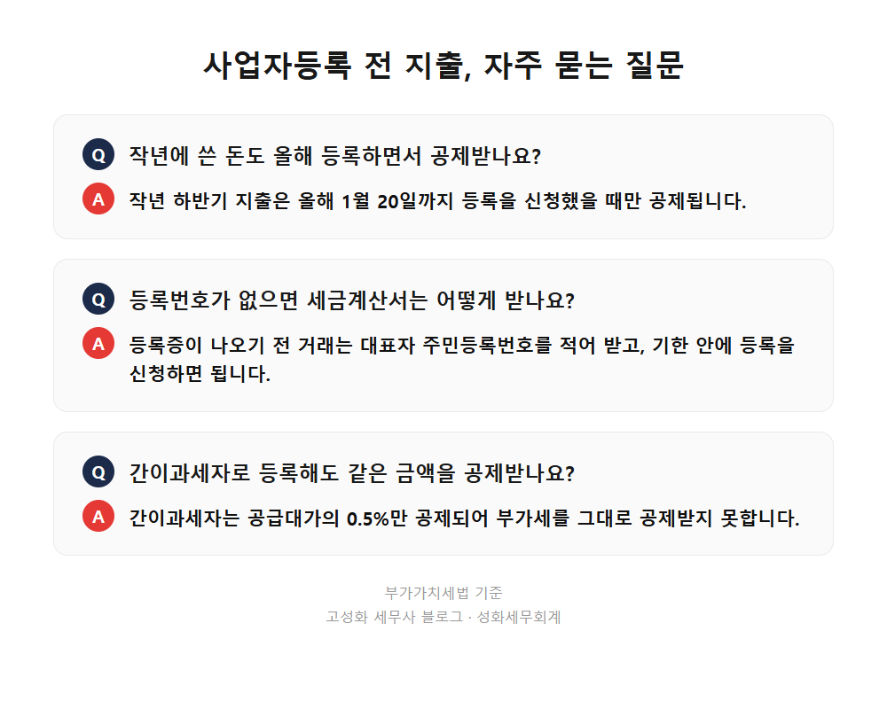

← 세무칼럼 목록
법인·기장
사업자등록 전 지출 경비처리, 방배동 첫 기장 상담 질문

가게 계약을 하고, 간판을 맞추고, 노트북과 집기를 들였습니다.
그런데 사업자등록증은 아직 없습니다.
이 돈은 어떻게 되는 걸까?
방배동 사무실에서 개인사업자 첫 기장 상담을 하면 가장 먼저 나오는 질문이 이것입니다.
이 글에서 다루는 내용
- 사업자등록 전 지출, 부가세 공제는 등록 신청일로 결정됩니다
- 등록번호가 없을 때 받아둘 증빙, 주민등록번호 세금계산서
한눈에 보기



자주 묻는 질문
작년에 쓴 돈도 올해 등록하면서 공제받을 수 있나요?
작년 하반기 지출이라면 올해 1월 20일까지 등록을 신청했을 때만 공제됩니다. 그 기한이 지나 등록했다면 작년 지출의 부가세는 공제되지 않습니다.
사업자등록 전에는 세금계산서를 어떻게 받나요?
사업자등록증이 나오기 전까지의 거래는 대표자 주민등록번호를 적어 세금계산서를 받으면 되고, 기한 안에 등록을 신청하면 공제에 쓸 수 있습니다.
간이과세자로 등록해도 같은 금액을 공제받나요?
간이과세자는 매입 세금계산서를 받아도 공급대가의 0.5%만 공제되어, 일반과세자처럼 부가세를 그대로 공제받지는 못합니다.
정리하면
사업자등록 전에 쓴 돈도 경비처리는 됩니다.
부가세까지 공제받으려면 그 지출이 속한 반기가 끝난 뒤 20일 안에 등록을 신청해야 합니다.
11월과 12월에 개업 준비로 쓴 돈이라면 내년 1월 20일이 기준입니다.
이런 것까지 물어봐도 되나 싶은 작은 영수증 하나가, 첫해 장부에서는 차이를 만들기도 합니다.
어떤 지출을 어느 해 경비로 넣을지는 개업일과 등록일, 과세 유형을 같이 놓고 봐야 알 수 있습니다.
방배동에서 개업을 앞두고 첫 기장 준비가 필요하시면 상담신청 해주세요.
본문 전체와 근거 조문은 블로그에서 확인하실 수 있습니다.